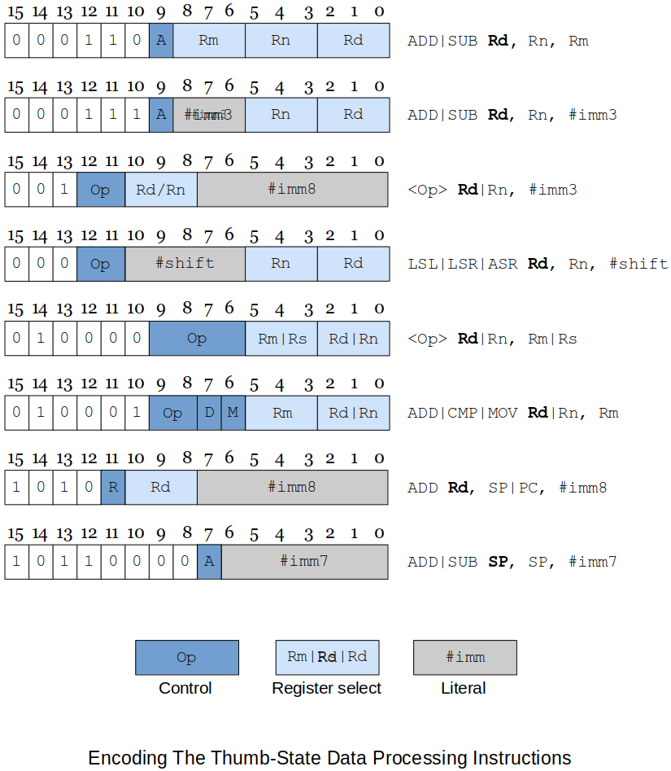
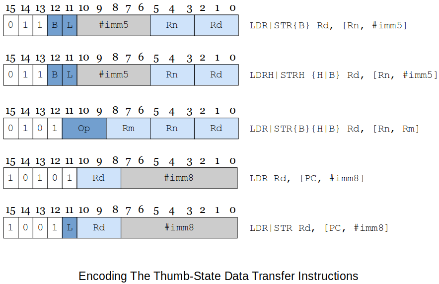
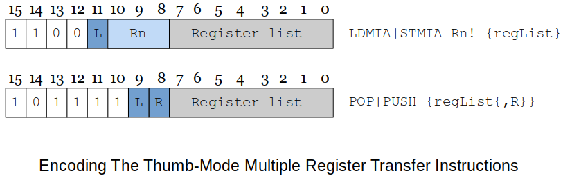

Home | Projects | Notes > Computer Architecture & Organization > ARM Thumb Instruction Set Architecture (ISA)
ARM Thumb Instruction Set Architecture (ISA)
Compressed Code, RISC, Thumb and MIPS-16
Some modern processors can change from a 32-bit machine to 16-bit machine.
Every ARM processor can run Thumb mode.
32-bit
64-bit
When bigger and faster is the king, why go back?
Less cost
Less power consumption
There are billions of CPU embedded in devices and the CPU manufacturers wanted to tap into that market.
The Thumb is an ARM which has a shorten bus which makes it cheaper to buy and uses cheaper memory and I/O devices.
Raspberry Pi ARM can run in this compressed mode - Thumb mode - which can be used for development and debugging.
ARM Thumb ISA
ARM(32-bit architecture) Thumb takes ARM's 32-bit structure and carms it into 16-bits.
The ARM processor's Thumb state gives the designer the best of both 16-bit and 32-bit world.
The processor can execute both compressed 16-bit Thumb code and normal 32-bit code.
This is achieved by putting the required ARM processor code in small 32-bit wide memories and then locating everything else in low-cost 16-bit wide memories.
When Thumb code is optimized for performance
When optimized for size
The Thumb register set

Thumb instructions are 16-bit wide.
Versions of the ARM processor family supporting the Thumb state provide a
T-bitinbit 5of theCPSR.When the
T-bitis set to1, the processor interprets the code as 16-bit Thumb instructions; otherwise the code is executed normally.Following a reset, the ARM processor enters its default native state.
Thumb state is entered by executing the
BXinstruction (banch and exchange) thatsets the
T-bit(bit-5) in theCPSRandexecutes a jump to the specified location.
Also, you have to tell the assembler that you are now writing ARM Thumb code.
The format is
xxxxxxxxxx41BX Rm @ Rm contains the target address of the Thumb code to be executed.2@ This means that Rm has to be properly loaded with the target address (label)3@ beforehand.4.code 16 @ following this will be the Thumb codeWhen
BXis executed, the least-significant bit ofRmis tested. (e.g.,BX r0)If it is set to a
1, the processor switches to its Thumb state and begins executing code at the address inRmaligned to a half-word (16-bit) boundary.If it is set to a
0, a jump is made to the address inRmaligned to a word (32-bit boundary) and the ARM processor continues execution in its normal default state.
With the proper instructions, you can make your code switch back and forth between these two modes as many times as you want.
Design Decisions
How did the ARM designers go about making the Thumb work?
Make too many changes
Especially if the changes were made to the number of registers, it would have been very costly. So, we are still dealing with 16 32-bit registers.
Make too few changes
Registers (4 bits in the opcode in the regular ARM mode)
To make the instruction format down from 32-bit to 16-bit could reduce the number of bits for the registers. Take the registers from 16 down to 8 (4-bit to 3-bit). BUT, cutting the number of registers in half will fundamentally change the ARM architecture.
Solution
Keep all the registers and just change the way they are accessed.
r0tor7are directly mapped to the Thumb state.r14(LR) andr15(PC) remain the same, except that they can't be explicitly accessed, and new instructions are requird to access them.r13can be used as a stack pointer in the ARM Processor architecture (by convention).In the Thumb state,
r13is defined as a hardware stack pointer and it now has auto-decrementing and incrementing modes.
Most instructions cannot access
r8tor12.Instruction now only need 3 bits to reference a register. (
r0tor7)Programmer can still access
r8tor12using specific instructions.
Other Design Decisions
No conditional execution (saves 4 bits per instruction).
e.g., No
ADDEQ
Many of the data processing instructions use a two-address format (like the CISC processors) to avoid encoding a third operand.
No shifted second operand
The greatest savings has been made by drastically reducing the size of immediate operands. (In the literal addressing mode)
Taken from 12-bit down to 3-bit or 7-bit or 8-bit depending on the instruction.
Ssuffix dropped.CCRbits always set when the ALU is used in a data processing instruction.e.g., No
ADDS
Summary
xxxxxxxxxx911. ADD Rd, Rn, Rm @ (ADD|SUB)22. ADD Rd, Rn, #imm3 @ (ADD|SUB)33. ADD Rd|Rn, #imm8 @ (ADD|SUB|MOV|CMP)44. LSL Rd|Rn, #imm8 @ (LSL|LSR|ASR)55. MVN Rd|Rn, Rn|Rs @ (MVN|CMP|CMN|TST|ADC|SBC|NEG|MUL|LSL|LSR|ASR|ROR|AND|6EOE|ORR|BIC)76. ADD Rd|Rn, Rm @ (ADD|CMP|MOV) high registers87. ADD Rd, SP|PC, #imm8 @ (ADD)98. ADD SP, SP, #imm7 @ (ADD|SUB)RdRsRn,RmDon't need to memorize all these formats. Just understand that in Thumb mode things have to get shrinked.
Thumb-state Data Processing Instructions

Thumb-state Branch Instructions

Above figure describes the encoding of the Thumb state's branch instructions.
A conditional branch has an 8-bit offset.
Make sure that the target address is reacheable by an 8-bit offset from the current location.
An unconditional branch has an 11-bit offset.
This branch encoding allows short-range branching for conditionals within small loops and
if-then-elseconstructs.The subroutine call instruction, branch with link (
BL) is not going to be very effective with onlyAny substantial piece of code can be expected to require long-distance subroutine calls and therefore a short literal is unlikely to provide the necessary range of target addresses.
The solution adopted is to employ a branch with linker instruction with an 11-bit offset and then to repeat the instruction to get a second 11-bit offset that can be concatenated to create a 22-bit offset.
Switching to ARM Thumb Mode
When writing ARM Thumb programs, you have to tell the assembler what state you are using. You indicate the type of code to the assembler by means of the directives
.code 32(ARM code) and.code 16(Thumb code).The default directive is
.code 32State Switching Example
xxxxxxxxxx151ADD r1, r2, r3 @ dummy instruction to show we are in ARM state2ADR r0, Thumb + 1 @ load the start address of the Thumb section3@ adding 1 to the address forces bit 0 in r0 high (which will4@ eventually set the T-bit in CPSR)5BX r0 @ branch and change to Thumb state6.code 16 @ assemble Thum instructions78Thumb: @ arrive here in Thumb state9ADD r1, r2 @ dummy instruction to show we are in Thumb state10ADR r0, Normal @ load the start address of the Normal (ARM) section11@ not adding 1 to the address will clear T-bit in CPSR12BX r0 @ branch and change to Normal (ARM) state13.code32 @ assemble ARM code1415Normal: @ arrive here executing ARM code
Thumb-state Load and Store Instructions
Thumb's load and store operations (described in the figure below) follow a similar pattern to the corresponding ARM processor instructions except that the displacement specified by the immediate offset is relatively small (either 5 or 8 bits).
Byte,half-wordandwordtransfers are supported.

Thumb-state Multiple Move Instructions
The Thumb instruction set also includes multiple memory move instructions, although the range of variations is not as gresat as in the ARM processor architecture (this is probably a blessing).
Following figure describes the two basic forms of the block register move instructions.

The 16-bit instruction format allows you to move only registers
r0tor7; you can't move any of the higher-order registers.The
STMIA Rn!, {registerList}instruction lets you copy the block of registers specified byregisterListto the memory location pointed at by registerRn.The only mode permitted is increment after which indicates that a register is stored at the location pointed at by
Rnand then the register is incremented by 4 after the register has been moved.The lowest numbered register is stored first at the lowest memory address (i.e., the initial starting address in the pointer register).
The
LDMIA Rn!, {registerList}copies data from memory to registers. The lowest numbered memory address is ifirst loaded into the lowest numbered register, the pointer incremented by 4, and the next load carried out.The
STMIAandLDMIAinstructions are inverse operations in the sense that anSTMIA Rn!, {registerList}can be followed immediately by anLDMIA Rn!, {registerList}without a change in the state of the system.The other block move is the
PUSHandPOPpair of instructions that are true inverses of each other in the sense that aPUSHfollowed by aPOPleaves the state of the system unchanged.These instructions do not require a register to be specified nor do they require the "
!" suffix because, by definition, they access the stack pointed at byr13, the stack pointer.The syntax for the register list is
registerList{,R}where{,R}field is optional andRmay besporpc; for example, you can writePUSH {r0-r4, lr}andPOP {r0-r4, pc}.Again, don't need to mess with the stack pointer. Just use
PUSHandPOPand they will automatically take care of the stack pointer increment/decrement.
What Else Does Change in Thumb Mode?
Fetch
Since the instruction size is shrinked to 16 bits,
PCwill be incremented by 2 instead of 4.
Why Do We Study Thumb Mode?
It represents an interesting approach to ISA design.
It has helped elevate ARM Holdings' position in the world of embedded computing to an industry user.
It demonstrates tradeoffs between code density and performance.
Mr. Preston's Experiences with Thumb Mode
Auto-indexing did NOT work!
Use Indirect Addressing instead, and manually update the reference (index) register.
LDRdid NOT work withr8|r9|r10.MOVdid work fine with the higher-order registers.
MULoperands:xxxxxxxxxx51MUL r1, r2, r12-- --3| |4+------+5these two had to be the same!And all operand registers had to be lower-order registers;
r0-r7.For
lr,PUSHonly!, forpc,POPonly!xxxxxxxxxx31pop {lr} @ did not work! Looks like assember knows what I need to do.2puch {lr} @ OK!3pop {pc} @ OK!UMULLdid work in Thumb mode even though it is said that it is not supported in 16-bit mode. Had no issues using higher-order registers during compilation. But, at runtime, only lower-order registersr0-r7were allowed.When higher-order registers were used
LDRB,STRB(forprintfandscanfin bytes) did not work. Needs some investigation!